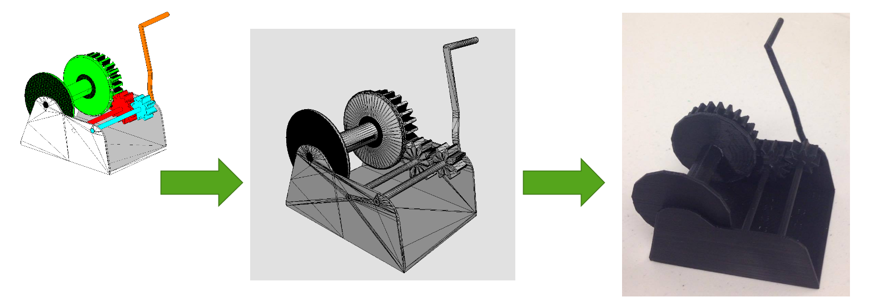

projects
Bentley Systems
Advancing infrastructure through modern and robust software solutions.
Product Design
Software Development
User Research
Workflow Management

At Bentley, I was a Product Design intern during Summer 2017 on the team for Bentley's largest product, Microstation, a CAD software for 3D infrastructure modeling. I worked on a few projects during my time at Bentley.
- Shrinkwrap: This feature "wraps" a 3D model with a quadrilateral mesh, making sure all the vertices are connected to ensure watertight-ness, a necessity for 3D printing. I first tested user workflows of how one would shrinkwrap different kinds of models: architectural, infrastructure, plant, or geospatial and printed them to examine their strength and condition i.e. what types of structural elements are unable to be shrinkwrapped?
After gaining a working knowledge of the shrinkwrap feature, I helped develop for it. I implemented a union find algorithm for the generation of a mesh. Union find helped determine whether a vertice has already been visited, so that it would not be visited again, increasing the efficiency of shrinkwrapping. - Geometry API: I helped develop parts of Bentley's core geometry libraries dealing with trigonometry and rotational axes that are extensively used in Bentley's CAD programs.